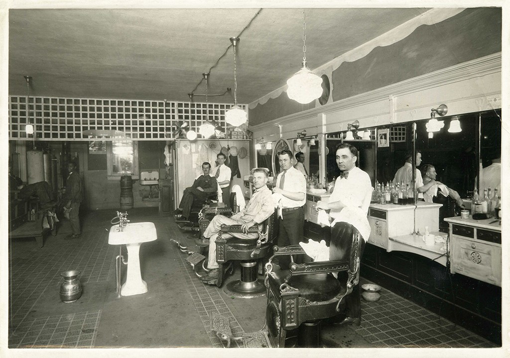
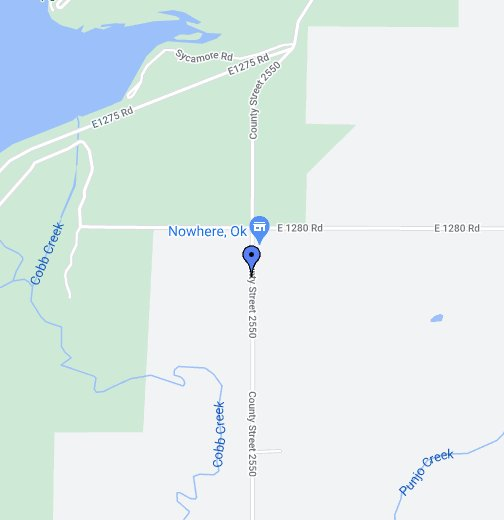

Learn About Our Barbershop

Elvis’ Barbershop welcomes each customer with fast service, friendly barbers, and the best in barbershop conversation. While we don’t take ourselves too seriously, we take each haircut we give seriously. We welcome everybody an all their genders. We specialize in various haircuts that fit each and every person that walks in our doors. We know that men want a great haircut or beard trim without waiting forever. Please reach out to us on our contact page! We are located conveniently at 31 Spooner St. Nowhere, OK. 73038

Discover the Secret Passion of Elvis Presley for Hair and Grooming. Follow the story of how the King of Rock and Roll not only sang his heart out but was also passionate about grooming. Learn about how he had a team of personal stylists and barbers who worked around the clock to keep his hair and appearance perfect. Find out how he visited local barbershops and salons to offer styling tips and advice to both the barbers and their customers. Elvis's legacy as a style icon and grooming enthusiast continues to inspire people around the world to take pride in their appearance and strive for their own signature style.